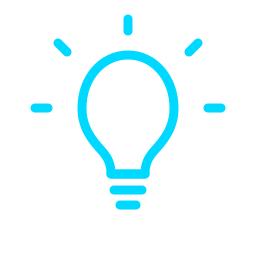

Linux
Learning Linux fundamentals, command-line usage, system administration, security tools and best practices.
01
- About Me
Exploring the principles of cybersecurity and developing practical skills to understand, identify, and strengthen digital security.
WHO I AM
I am an aspiring cybersecurity professional with a genuine interest in understanding how technology, systems, and networks work, and how they can be secured against evolving threats.
I enjoy learning new technologies, exploring cybersecurity concepts, and gaining practical experience through hands-on labs and projects. I’m particularly interested in understanding how security works in real-world environments.
I believe that cybersecurity is a field of continuous learning, where curiosity, practical experience, and problem-solving are essential. I’m focused on building a strong foundation and developing my skills step by step.
WHAT I'M LEARNING
These are the key areas I'm currently exploring and developing through study, practice, and hands-on labs.
Learning Linux fundamentals, command-line usage, system administration, security tools and best practices.
Building a strong foundation in networking fundamentals, network communication, protocols, and security concepts.
Exploring common web application vulnerabilities, and the fundamentals of secure web development
Practicing security testing to understand vulnerabilities, threats, and defensive techniques.
MY APPROACH
My approach to cybersecurity is built on three key principles that guide my learning journey.
Cybersecurity constantly evolves, so I focus on continuously building my knowledge and staying curious about new technologies.
I use virtual labs and practical exercises to turn concepts into real-world technical understanding.

I approach security challenges by breaking problems down, investigating them, and learning from the results.
MY JOURNEY
A simple view of my journey and where I'm headed.
Build a strong foundation in cybersecurity, networking, Linux, and related technologies.
Apply concepts through virtual labs, security tools, and controlled environments.
Turn what I learn into practical projects and document my progress.
Continue developing my skills and work towards becoming a cybersecurity professional.
WHAT'S NEXT?
Take a look at my projects and hands-on cybersecurity work.